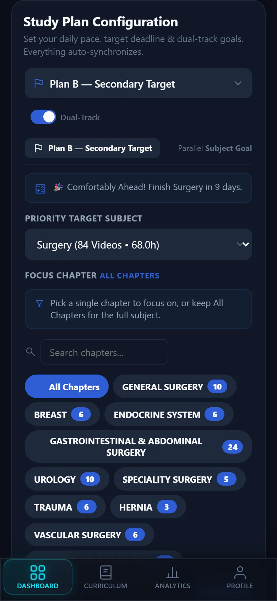
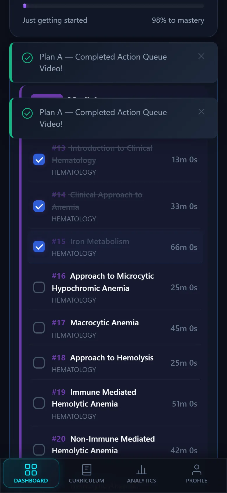
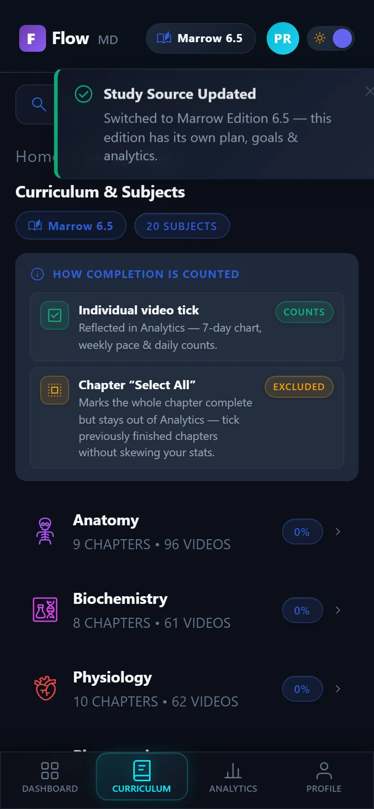
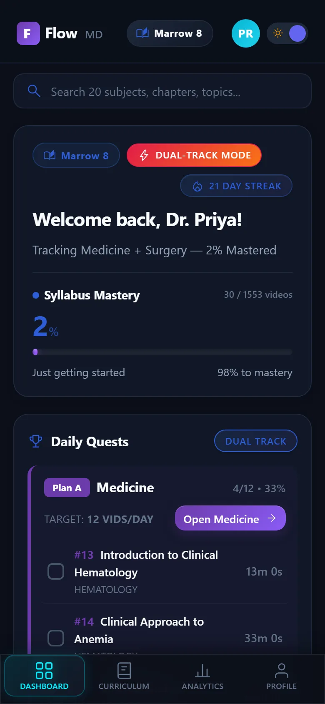
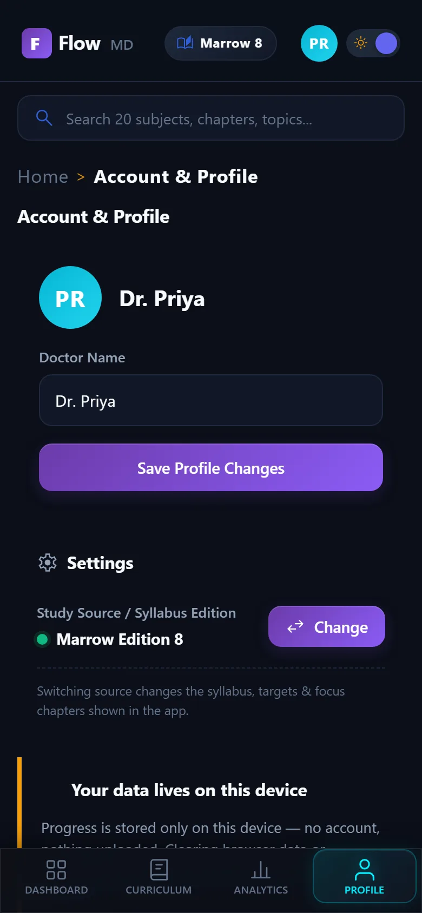
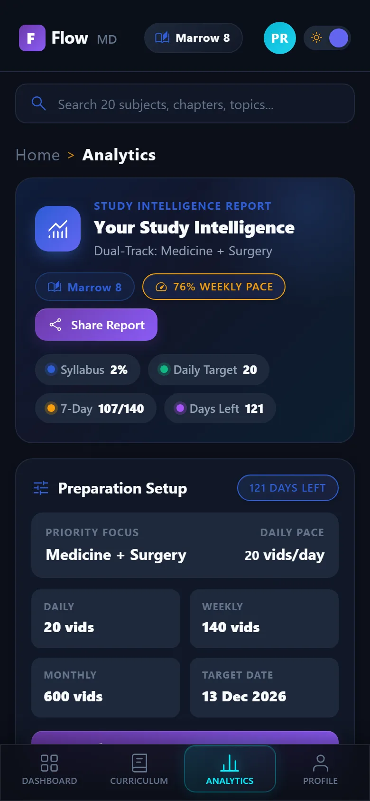

Free · Offline-first · Made for NEET-PG
A NEET-PG planner that keeps you on track.
Run two subjects at once, finish daily quests, and know exactly where you stand — online or off.
Install the app Open in browser
Free · No account · Install for full-screen, offline use.
What FlowMD does
Six things, one habit.
Dual-track plans
Study two subjects at the same time without mixing them up. Plan A might be Anatomy at 3 videos a day with a September deadline, while Plan B covers Physiology at 2 a day — each tracked independently with its own progress, analytics, and completion history.

Daily quests
Each day the app builds a fresh batch of videos from your plan — no decision fatigue, just open and start. Complete your daily target and you can unlock extra one-at-a-time bonus videos. The quest resets at 5 AM so late-night study still counts as the same day.

Per-edition workspaces
Marrow Edition 8 and Edition 6.5 each get their own isolated workspace. Switching editions swaps your plans, daily quests, analytics, and completion history instantly — nothing leaks between them. Two syllabi, zero overlap.

Offline-first PWA
Install FlowMD once and it lives on your home screen like a native app. The entire syllabus is cached for offline use — no Wi-Fi, no data, no problem. Completions and progress sync automatically when you reconnect.

Export & backup
All your data stays on your device — nothing leaves your phone unless you choose. Export your entire progress to a single file, move to a new phone, and restore it in seconds. No account required, no cloud dependency.

Analytics that re-derive your pace
See exactly where you stand with 7-day and 30-day execution charts, a live syllabus mastery percentage, and a deadline countdown that recalculates as your pace changes. The ETA is never a guess — it's math derived from the videos you've actually completed.

Beta
You're early. That's a good thing.
FlowMD is in beta. It's free, it's offline-first, and it gets better every week. Found a bug, or have an idea? Tell us — fixes ship weekly.
Your progress is stored on this device. Clearing browser data or uninstalling the app erases it — export a backup.
About the developer
Built by someone studying for the same exam.
FlowMD was built by a doctor-in-training who got tired of spreadsheet planning. It started as a personal tracker and grew into the app you see today — a planner that assumes nothing, waits for your real pace and deadline, and re-derives everything from the progress you actually make.
The whole project is open source. Every commit, every changelog entry, every roadmap decision is public.
Android app · early beta
An optional Android app, for testers.
The web app is the main way to use FlowMD — this is a small, optional beta for people who'd like an app icon. It runs the same live app in a full-screen Chrome shell, so it works offline and updates automatically.
It's invite-only: request access and the APK is shared directly with you. It isn't published on any app store.
Your data still lives on your device. The Android app runs the same offline-first FlowMD in a full-screen Chrome shell.
What is this?
Questions, answered.
Is FlowMD free?
Yes — free and completely ad-free while FlowMD is in beta.
Will I lose my progress?
Progress is stored on your device. Clearing browser data or uninstalling the app erases it — so export a backup first. Restoring it on a new phone takes seconds.
Does it need a subscription?
No. It plans your Edition 8 or 6.5 syllabus; no coaching-platform subscription is required to use it.
Does it work offline?
Yes — install it as a PWA and the whole syllabus works without a signal. Everything you do saves on the device itself.
Is there an Android app?
Yes — a closed beta APK, shared directly with opted-in users. It runs the live app in a full-screen Chrome shell, so offline-first works and bug fixes and new features reach your phone automatically on the next launch — no reinstall needed. Request it from the developer.
Phone or laptop?
Both — just use the same browser or device. There's no cloud sync yet, so move between devices by exporting a backup and importing it on the other one.
Is my data safe?
It lives only on your device — nothing is uploaded anywhere. Export a backup file to keep a copy you control.
How do I report a bug?
Open the app, tap Report a bug, or file an issue on GitHub — fixes ship weekly during beta.